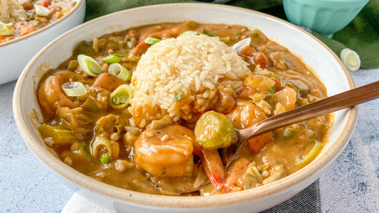

Shrimp and Okra Gumbo

Description
Tasty shrimp gumbo served over rice with crusty French bread. Garnish with fresh parsley.
Ingredients
- 2 pounds medium shrimp - peeled and deveined
- salt and pepper to taste
- cayenne pepper to taste
- ½ cup olive oil
- 2 pounds chopped okra
- 1 tablespoon tomato paste
- 1 tomato, chopped
- 1 cup chopped onion
- 4 cloves garlic, minced
- ½ cup chopped celery
- ½ cup chopped green bell pepper
- 12 cups water
- ½ cup chopped green onions
Steps
- Season the shrimp with salt, pepper and cayenne to taste and set aside. Heat the oil in a large pot over medium heat. Add the okra and saute for 30 minutes, stirring occasionally. Add the tomato paste, tomato, onion, garlic, celery and green bell pepper and saute for 15 more minutes.
- Add the water and season to taste. Bring to a boil, reduce heat to low and simmer for 45 minutes. Add the shrimp and simmer for 20 more minutes. Finally, add the green onion to the soup and stir thoroughly.